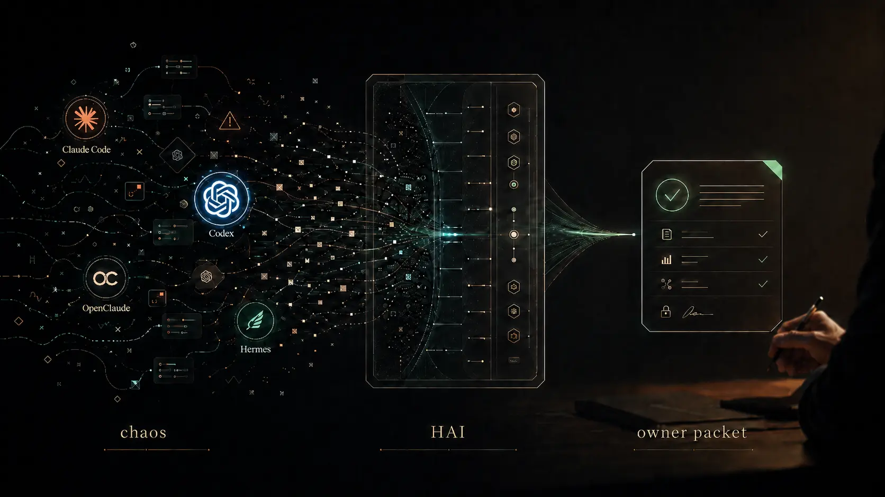

I already work with agents.
You use Claude Code, Codex, Cursor, Hermes, custom harnesses, or repeated agent workflows. The problem is not access. It is scope, trust, verification, ownership, and where the human must stay in control.

For people stuck inside agent threads Für Menschen in zu vielen Agenten-Threads For one messy agent workflow Für einen chaotischen Agenten-Workflow Proof before more agent output Nachweis vor noch mehr Agenten-Output
Human Agent Interface (HAI), created by Samuel Fleig, turns agent chaos into work a human can still own: observable, bounded, verifiable, and human-owned. Human Agent Interface (HAI), entwickelt von Samuel Fleig, macht aus Agenten-Chaos wieder Arbeit, die ein Mensch steuern kann: beobachtbar, begrenzt, überprüfbar und menschlich verantwortet.
You have Claude Code open.
Codex produced another plan.
One chat says the build is done.
Another says the architecture is wrong.
You have five outputs and no decision.
That is where HAI starts.
Claude Code ist offen.
Codex hat den nächsten Plan geschrieben.
Ein Chat sagt: fertig.
Ein anderer sagt: Architektur falsch.
Du hast fünf Outputs und keine Entscheidung.
Genau dort startet HAI.
HAI starts with one workflow you can actually inspect. Bring the messy agent thread, stalled tool run, or pile of conflicting plans. Leave with a scoped packet: what the agent does, what you decide, and how the work gets verified. HAI startet mit einem Workflow, den du wirklich prüfen kannst. Bring den verworrenen Agenten-Thread, den steckenden Tool-Run oder die widersprüchlichen Pläne. Am Ende steht ein kleiner Scope: was der Agent tut, was du entscheidest und wie die Arbeit geprüft wird.
HAI is built from real local agent systems, evals, and owner-control artifacts. The point is not to worship stronger tools. The point is whether the human can still inspect, stop, verify, and own the work. HAI kommt aus echten lokalen Agenten-Systemen, Evals und Owner-Control-Artefakten. Es geht nicht darum, stärkere Tools zu feiern. Es geht darum, ob der Mensch Arbeit noch prüfen, stoppen, verifizieren und besitzen kann.
Language and audience routing
HAI is built for agent-native work. If you are not there yet, use the simpler door without turning HAI into beginner AI training.
You use Claude Code, Codex, Cursor, Hermes, custom harnesses, or repeated agent workflows. The problem is not access. It is scope, trust, verification, ownership, and where the human must stay in control.
You are not buying a beginner course. You need language, boundaries, and a safe first diagnostic so confusing AI work becomes one clear next step.
Sprache und Einstieg
Nicht noch mehr Output. Erst wieder Überblick: Wo kann ich Kontrolle, Überblick oder Vertrauen verlieren? Und was passiert mit meinem mentalen Modell des Projekts?
Es ist zu viel Output, aber keine Entscheidung: Claude Code ist offen, Codex plant weiter, drei Chats widersprechen sich, und am Ende musst du trotzdem entscheiden. Agenten dürfen arbeiten, aber sie dürfen mir nicht das Projekt aus der Hand nehmen. HAI macht daraus: ein kleiner, prüfbarer nächster Schritt.
Das ist kein KI-Einsteigerkurs. Es geht darum, Kontrolle, Vertrauen und Grenzen zu finden, bevor du mehr an Tools oder Agents delegierst. Münztelefon ist für Leute, die nicht lesen wollen oder gerade überfordert sind.
The customer pain Der eigentliche Schmerz
You start with an idea, open three chats, ask for a plan, launch an agent, paste context into another tool, then lose the thread. The output is not wrong. It is just not owned. Du startest mit einer Idee, öffnest drei Chats, holst einen Plan, startest einen Agenten, kopierst Kontext in das nächste Tool und verlierst den Faden. Der Output ist nicht unbedingt falsch. Er gehört dir nur nicht mehr richtig.
HAI exists for that moment: when the human state is messy, the agents are loud, and the next responsible action is not obvious. HAI ist für genau diesen Moment da: Der menschliche Zustand ist unordentlich, die Agents produzieren weiter, und die nächste verantwortliche Handlung ist nicht klar.
20 min HAI fit call 20-Minuten-Hypothese
Bring one real workflow, not a transformation plan. The call is for finding whether HAI can turn your current agent mess into a bounded 4h audit. Bring einen echten Workflow, keinen Transformationsplan. Der Call testet nur, ob HAI aus deinem aktuellen Agenten-Durcheinander einen begrenzten 4h-Scope machen kann.
Pilot status: testing HAI with the first 5-10 real workflows. One workflow, one owner packet, one follow-up. Pilotstatus: Ich teste HAI an den ersten 5-10 echten Workflows. Ein Workflow, ein Owner Packet, ein Follow-up.
Humans are tool-using animals. Agents are the most powerful tool we have ever built. Menschen nutzen Werkzeuge. Agents sind das mächtigste Werkzeug, das wir bisher gebaut haben.
Voice, text, drawing, terminal, IDE, browser, or background process are only surfaces. The real interface is how the human directs, scopes, verifies, and stays aligned with a system that can act. Stimme, Text, Skizze, Terminal, IDE, Browser oder Hintergrundprozess sind nur Oberflächen. Das echte Interface ist die Frage, wie der Mensch ein handelndes System richtet, begrenzt, prüft und ausgerichtet hält.
The product unit is a conversion Die kleinste Einheit
The interface shift Der Interface-Wechsel
The minimum loop Der minimale Loop
Capture the messy state without pretending it is already a task. Den unklaren Zustand aufnehmen, ohne so zu tun, als wäre er schon ein Task.
Name what this is: decision, research, build, repair, or human-only. Benennen, was es ist: Entscheidung, Recherche, Build, Reparatur oder human-only.
Keep judgment, risk, and irreversible choices with the human. Urteil, Risiko und irreversible Entscheidungen beim Menschen lassen.
Bound the agent work so it can be executed and checked. Agentenarbeit so begrenzen, dass sie ausgeführt und geprüft werden kann.
Produce the next concrete action the agent can actually take. Die nächste konkrete Handlung erzeugen, die ein Agent wirklich tun kann.
20 min HAI fit call Fit-Call als Test
Show me one agent workflow that currently creates confusion. Leave with the next concrete packet of work: what this is, what an agent should do, what you must decide yourself, and what happens next. Zeig mir einen Agenten-Workflow, der gerade Verwirrung erzeugt. Ziel ist kein Verkaufstrick, sondern ein Test: Wird daraus ein konkretes Arbeitspaket, eine klare menschliche Entscheidung und ein prüfbarer nächster Schritt?